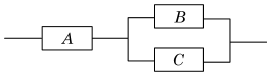
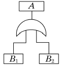
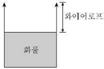
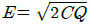
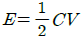
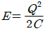
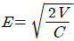
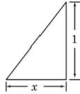

산업안전산업기사 (2016-05-08 기출문제)
1과목: 산업안전관리론
1. 산업안전보건법상 사업 내 안전･보건교육의 교육 과정에 해당하지 않는 것은?
- 검사원 정기점검교육
- 특별안전･보건교육
- 근로자 정기안전･보건교육
- 작업내용 변경시의 교육
(정답률: 82%)

2. 자신의 약점이나 무능력, 열등감을 위장하여 유리하게 보호함으로써 안정감을 찾으려는 방어적 적응기제에 해당하는 것은?
- 보상
- 고립
- 퇴행
- 억압
(정답률: 77%)
3. 위험예지훈련 기초 4라운드(4R)에서 라운드별 내용이 바르게 연결된 것은?
- 1라운드: 현상파악
- 2라운드: 대책수립
- 3라운드: 목표설정
- 4라운드: 본질추구
(정답률: 91%)
4. ERG(Existence Relation Growth)이론을 주창한 사람은?
- 매슬로우(Maslow)
- 맥그리거(McGregor)
- 테일러(Taylor)
- 알더퍼(Alderfer)
(정답률: 73%)
5. 하인리히(Heinrich)의 이론에 의한 재해 발생의 주요 원인에 있어 다음 중 불안전한 행동에 의한 요인이 아닌 것은?
- 권한 없이 행한 조작
- 전문지식의 결여 및 기술, 숙련도 부족
- 보호구 미착용 및 위험한 장비에서 작업
- 결함 있는 장비 및 공구의 사용
(정답률: 64%)
6. 재해손실비용 중 직접비에 해당되는 것은?
- 인적손실
- 생산손실
- 산재보상비
- 특수손실
(정답률: 78%)
7. 적응기제에서 방어기제가 아닌 것은?
- 보상
- 고립
- 합리화
- 동일시
(정답률: 68%)
8. 자율검사프로그램을 인정받으려는 자가 한국 산업안전보건공단에 제출해야 하는 서류가 아닌 것은?
- 안전검사대상 유해･위험기계 등의 보유 현황
- 유해･위험기계 등의 검사 주기 및 검사 기준
- 안전검사대상 유해･위험기계의 사용 실적
- 향후 2년간 검사대상 유해･위험기계 등의 검사수행계획
(정답률: 65%)
9. 토의식 교육지도에 있어서 가장 시간이 많이 소요되는 단계는?
- 도입
- 제시
- 적용
- 확인
(정답률: 72%)
10. 공장 내에 안전･보건표지를 부착하는 주된 이유는?(오류 신고가 접수된 문제입니다. 반드시 정답과 해설을 확인하시기 바랍니다.)
- 안전의식 고취
- 인간 행동의 변화 통제
- 공장 내의 환경 정비 목적
- 능률적인 작업을 유도
(정답률: 80%)
11. 안전관리의 중요성과 가장 거리가 먼 것은?
- 인간존중이라는 인도적인 신념의 실현
- 경영 경제상의 제품의 품질 향상과 생산성 향상
- 재해로부터 인적･물적 손실 예방
- 작업환경 개선을 통한 투자 비용 증대
(정답률: 73%)
12. 재해예방의 4원칙에 해당되지 않는 것은?
- 손실발생의 원칙
- 원인계기의 원칙
- 예방가능의 원칙
- 대책선정의 원칙
(정답률: 82%)
13. 인간의 실수 및 과오의 요인과 직접적인 관계가 가장 먼 것은?
- 관리의 부적당
- 능력의 부족
- 주의의 부족
- 환경조건의 부적당
(정답률: 42%)
14. OJT(On the Job Tranining)에 관한 설명으로 옳은 것은?
- 집합교육형태의 훈련이다.
- 다수의 근로자에게 조직적 훈련이 가능하다.
- 직장의 설정에 맞게 실제적 훈련이 가능하다.
- 전문가를 강사로 활용할 수 있다.
(정답률: 78%)
15. 피로를 측정하는 방법 중 동작 분석, 연속 반응시간 등을 통하여 피로를 측정하는 방법은?
- 생리학적 측정
- 생화학적 측정
- 심리학적 측정
- 생역학적 측정
(정답률: 54%)
16. 인지과정 착오의 요인이 아닌 것은?
- 정서 불안정
- 감각차단 현상
- 작업자의 기능미숙
- 생리･심리적 능력의 한계
(정답률: 76%)
17. 산업안전보건법상 안전보건관리규정을 작성하여야 할 사업 중에 정보서비스업의 상시 근로자 수는 몇 명 이상인가?
- 50
- 100
- 300
- 500
(정답률: 67%)
18. 안전모의 종류 중 머리 부위의 감전에 대한 위험을 방지할 수 있는 것은?
- A형
- B형
- AC형
- AE형
(정답률: 89%)
19. 도수율이 12.57, 강도율이 17.45인 사업장에서 1명의 근로자가 평생 근무한다면 며칠의 근로손실이 발생하겠는가?(단, 1인 근로자의 평생근로 시간은 105 시간이다.)
- 1,257일
- 126일
- 1,745일
- 175일
(정답률: 59%)
20. 모랄 서베이(Morale Survey)의 주요 방법 중 태도조사법에 해당하는 것은?
- 사례연구법
- 관찰법
- 실험연구법
- 문답법
(정답률: 62%)
2과목: 인간공학 및 시스템안전공학
21. 사고의 발단이 되는 초기 사상이 발생할 경우 그 영향이 시스템에서 어떤 결과(정상 또는 고장)로 진전해 가는지를 나뭇가지가 갈라지는 형태로 분석하는 방법은?
- FTA
- PHA
- FHA
- ETA
(정답률: 50%)
22. 그림의 부품 A, B, C 로 구성된 시스템의 신뢰도는?(단, 부품 A 의 신뢰도는 0.85, 부품 B와 C의 신뢰도는 각각 0.9이다.)

- 0.8415
- 0.8425
- 0.8515
- 0.8525
(정답률: 65%)
23. 시스템 수명주기에서 예비위험분석을 적용하는 단계는?
- 구상단계
- 개발단계
- 생산단계
- 운전단계
(정답률: 59%)
24. 건강한 남성이 8시간 동안 특정 작업을 실시하고, 산소소비량이 1.2[L/분]으로 나타났다면 8시간 총 작업시간에 포함되어야 할 최소 휴식시간은?(단, 남성의 권장 평균에너지소비량은 5[kcal/분], 안정시 에너지소비량은 1.5[kcal/분]으로 가정한다.)
- 107분
- 117분
- 127분
- 137분
(정답률: 39%)
25. 음의 세기인 데시벨[dB]을 측정할 때 기준 음압의 주파수는?
- 10[Hz]
- 100[Hz]
- 1,000[Hz]
- 10,000[Hz]
(정답률: 74%)
26. FT도에서 정상사상 A의 발생확률은?(단, 사상 B1의 발생확률은 0.3이고, B2의 발생확률은 0.2이다.)

- 0.06
- 0.44
- 0.56
- 0.94
(정답률: 58%)
27. 설비보전 방식의 유형 중 궁극적으로는 설비의 설계, 제작 단계에서 보전 활동이 불필요한 체계를 목표로 하는 것은?
- 개량보전(corrective maintenance)
- 예방보전(preventive maintenance)
- 사후보전(break-down maintenance)
- 보전예방(maintenance prevention)
(정답률: 55%)
28. 창문을 통해 들어오는 직사휘광을 처리하는 방법으로 가장 거리가 먼 것은?
- 창문을 높이 단다.
- 간접 조명 수준을 높인다.
- 차양이나 발(blind)을 사용한다.
- 옥외 창 위에 드리우개(overhang)를 설치한다.
(정답률: 66%)
29. FTA의 논리게이트 중에서 3개 이상의 입력사상 중 2개가 일어나면 출력이 나오는 것은?
- 억제 게이트
- 조합 AND 게이트
- 배타적 OR 게이트
- 우선적 AND 게이트
(정답률: 58%)
30. 표시 값의 변화 방향이나 변화 속도를 관찰할 필요가 있는 경우에 가장 적합한 표시장치는?
- 동목형 표시장치
- 계수형 표지장치
- 묘사형 표시장치
- 동침형 표시장치
(정답률: 74%)
31. 조종장치의 저항 중 갑작스런 속도의 변화를 막고 부드러운 제어동작을 유지하게 해주는 저항을 무엇이라 하는가?
- 점성저항
- 관성저항
- 마찰저항
- 탄성저항
(정답률: 70%)
32. 녹색과 적색의 두 신호가 있는 신호등에서 1시간동안 적색과 녹색이 각각 30분씩 켜진다면 이 신호등의 정보량은?
- 0.5[bit]
- 1[bit]
- 2[bit]
- 4[bit]
(정답률: 59%)
33. 인간이 현존하는 기계를 능가하는 기능으로 거리가 먼 것은?
- 완전히 새로운 해결책을 도출할 수 있다.
- 원칙을 적용하여 다양한 문제를 해결할 수 있다.
- 여러 개의 프로그램된 활동을 동시에 수행할 수 있다.
- 상황에 따라 변하는 복잡한 자극 형태를 식별할 수 있다.
(정답률: 83%)
34. 인간공학적 수공구의 설계에 관한 설명으로 맞는 것은?
- 손잡이 크기를 수공구 크기에 맞추어 설계한다.
- 수공구 사용 시 무게 균형이 유지되도록 설계한다.
- 정밀 작업용 수공구의 손잡이는 직경을 5[mm] 이하로 한다.
- 힘을 요하는 수공구의 손잡이는 직경을 60[mm] 이상으로 한다.
(정답률: 72%)
35. 과전압이 걸리면 전기를 차단하는 차단기, 퓨즈 등을 설치하여 오류가 재해로 이어지지 않도록사고를 예방하는 설계 원칙은?
- 에러복구 설계
- 풀-프루프(fool-proof) 설계
- 페일－세이프(fail-safe) 설계
- 템퍼－프루프(tamper proof) 설계
(정답률: 68%)
36. 일반적으로 의자설계의 원칙에서 고려해야 할 사항과 거리가 먼 것은?
- 체중분포에 관한 사항
- 상반신의 안정에 관한 사항
- 개인차의 반영에 관한 사항
- 의자 좌판의 높이에 관한 사항
(정답률: 73%)
37. 인적 오류로 인한 사고를 예방하기 위한 대책 중 성격이 다른 것은?
- 작업의 모의훈련
- 정보의 피드백 개선
- 설비의 위험요인 개선
- 적합한 인체측정치 적용
(정답률: 44%)
38. 결함수 분석의 컷셋(cut set)과 패스셋(path set)에 관한 설명으로 틀린 것은?
- 최소 컷셋은 시스템의 위험성을 나타낸다.
- 최소 패스셋은 시스템의 신뢰도를 나타낸다.
- 최소 패스셋은 정상사상을 일으키는 최소한의 사상 집합을 의미한다.
- 최소 컷셋은 반복사상이 없는 경우 일반적으로 퍼셀(Fussell) 알고리즘을 이용하여 구한다.
(정답률: 66%)
39. 실효온도(ET)의 결정 요소가 아닌 것은?
- 온도
- 습도
- 대류
- 복사
(정답률: 63%)
40. 청각신호의 수신과 관련된 인간의 기능으로 볼 수 없는 것은?
- 검출(detection)
- 순응(adaptation)
- 위치 판별(directional judgement)
- 절대적 식별(absolute judgement)
(정답률: 52%)
3과목: 기계위험방지기술
41. 선반의 안전작업 방법 중 틀린 것은?
- 절삭칩의 제거는 반드시 브러시를 사용할 것
- 기계운전 중에는 백기어(back gear)의 사용을 금할 것
- 공작물의 길이가 직경의 6배 이상일 때는 반드시 방진구를 사용할 것
- 시동 전에 척 핸들을 빼둘 것
(정답률: 62%)
42. 기계의 안전조건 중 구조의 안전화가 아닌 것은?
- 기계재료의 선정 시 재료 자체에 결함이 없는지 철저히 확인한다.
- 사용 중 재료의 강도가 열화될 것을 감안 하여 설계 시 안전율을 고려한다.
- 기계작동 시 기계의 오동작을 방지하기 위하여 오동작 방지회로를 적용한다.
- 가공경화와 같은 가공결함이 생길 우려가 있는 경우는 열처리 등으로 결함을 방지 한다.
(정답률: 66%)
43. 가드(guard)의 종류가 아닌 것은?
- 고정식
- 조정식
- 자동식
- 반자동식
(정답률: 76%)
44. 지게차가 무부하 상태로 구내 최고속도 25[km/h]로 주행 시 좌우안정도는 몇 [%] 이내인가?
- 16.5[%]
- 25.0[%]
- 37.5[%]
- 42.5[%]
(정답률: 45%)
45. 근로자가 탑승하는 운반구를 지지하는 달기체인의 안전계수는 몇 이상이어야 하는가?
- 3
- 4
- 5
- 10
(정답률: 70%)
46. 산업용 로봇의 방호장치로 옳은 것은?
- 압력방출장치
- 안전매트
- 과부하방지장치
- 자동전격방지장치
(정답률: 71%)
47. 수공구 작업 시 재해방지를 위한 일반적인 유의사항이 아닌 것은?
- 사용 전 이상 유무를 점검한다.
- 작업자에게 필요한 보호구를 착용시킨다.
- 적합한 수공구가 없을 경우 유사한 것을 선택하여 사용한다.
- 사용 전 충분한 사용법을 숙지한다.
(정답률: 85%)
48. 체인과 스프로킷, 랙과 피니언, 풀리와 V벨트 등에 형성되는 위험점은?
- 끼임점
- 회전말림점
- 접선물림점
- 협착점
(정답률: 49%)
49. 가스집합용접장치에서 가스장치실에 대한 안전조치로 틀린 것은?
- 가스가 누출될 때에는 해당 가스가 정체되지 않도록 한다.
- 지붕 및 천장은 콘크리트 등의 재료로 폭발을 대비하여 견고히 한다.
- 벽에는 불연성 재료를 사용한다.
- 가스장치실에는 관계근로자가 아닌 사람의 출입을 금지시킨다.
(정답률: 70%)
50. 그림과 같이 2줄 걸이 인양작업에서 와이어로프 1줄의 파단하중이 10,000[N], 인양화물의 무게가 2,000[N]이라면 이 작업에서 확보된 안전율은?

- 2
- 5
- 10
- 20
(정답률: 55%)
51. 목재가공용 둥근톱의 목재 반발예방장치가 아닌 것은?
- 반발방지 발톱(finger)
- 분할날(spreader)
- 덮개(cover)
- 반발방지 롤(roll)
(정답률: 53%)
52. 공작기계 중 플레이너 작업 시 안전대책이 아닌 것은?
- 베드 위에는 다른 물건을 올려 놓지 않는다.
- 절삭행정 중 일감에 손을 대지 말아야 한다.
- 프레임 내의 피트(Pit)에는 뚜껑을 설치하여야 한다.
- 바이트는 되도록 길게 나오도록 설치한다.
(정답률: 82%)
53. 프레스의 양수조작식 방호장치에서 양쪽버튼의 작동시간 차이는 최대 몇 초 이내일 때 프레스가 동작되도록 해야 하는가?
- 0.1
- 0.5
- 1.0
- 1.5
(정답률: 73%)
54. 보일러의 안전한 기동을 위해 압력방출장치가 2개 이상 설치된 경우 최고사용압력 이하에서 1개가 작동되었다면, 다른 압력방출장치의 작동압력의 범위는?
- 최고사용압력 1.⑤배 이하
- 최고사용압력 1.1배 이하
- 최고사용압력 1.15배 이하
- 최고사용압력 1.2배 이하
(정답률: 71%)
55. 연삭숫돌의 파괴원인이 아닌 것은?
- 숫돌 작업 시 측면 사용이 원인이 된다.
- 숫돌 작업 시 드레싱을 실시했을 때 원인이 된다.
- 숫돌의 회전속도가 너무 빠를 때 원인이 된다.
- 숫돌의 회전중심이 잡히지 않았거나 베어링의 마모에 의한 진동이 원인이 된다.
(정답률: 72%)
56. 산업안전보건기준에 관한 규칙상 안전난간의 구조 및 설치요건 중 상부난간대는 바닥면ㆍ발판 또는 경사로의 표면으로부터 몇 [cm] 이상 지점에 설치해야 하는가?
- 30
- 60
- 90
- 120
(정답률: 52%)
57. 기계설비에 있어서 방호의 기본 원리가 아닌 것은?
- 위험제거
- 덮어씌움
- 위험도 분석
- 위험에 적응
(정답률: 42%)
58. 화물의 하중을 직접 지지하는 달기와이어로프의 안전계수 기준은?
- 3 이상
- 4 이상
- 5 이상
- 10 이상
(정답률: 76%)
59. 프레스작업의 안전을 위한 방호장치 중 투광부와 수광부를 구비하는 방호장치는?
- 양수조작식
- 가드식
- 광전자식
- 수인식
(정답률: 70%)
60. 플레이너와 셰이퍼의 방호장치가 아닌 것은?
- 칩 브레이커
- 칩받이
- 칸막이
- 방책
(정답률: 67%)
4과목: 전기 및 화학설비위험방지기술
61. 22.9[kV] 특별고압 활선작업 시 충전전로에 대한 접근한계거리는 몇 [cm]인가?
- 30
- 60
- 90
- 110
(정답률: 48%)
62. 대전된 물체가 방전을 일으킬 때의 에너지 E [J]를 구하는 식으로 옳은 것은?(단, 도체의 정전용량은 C [F], 대전전위는 V [V], 대전전하량은 Q [C]이다.)




(정답률: 70%)
63. 전기기기의 불꽃 또는 열로 인해 폭발성 위험분 위기에 점화되지 않도록 컴파운드를 충전해서 보호한 방폭구조는?
- 몰드방폭구조
- 비점화방폭구조
- 안전증방폭구조
- 본질안전방폭구조
(정답률: 58%)
64. 전로에 시설하는 기계기구의 철대 및 금속제 외함에는 규정에 따른 접지공사를 실시하여야 하나 시설하지 않아도 되는 경우가 있다. 예외 규정으로 틀린 것은?
- 사용전압이 교류 대지전압 150[V] 이하인 기계기구를 습한 곳에 시설하는 경우
- 철대 또는 외함 주위에 적당한 절연대를 설치하는 경우
- 저압용 기계기구를 건조한 마루나 절연성 물질 위에서 취급하도록 시설하는 경우
- 2중 절연구조로 되어 있는 기계기구를 시설하는 경우
(정답률: 56%)
65. 누전차단기의 선정 및 설치에 관한 설명으로 틀린 것은?
- 차단기를 설치한 전로에 과부하보호장치를 설치하는 경우는 서로 협조가 잘 이루어지도록 한다.
- 정격부동작전류와 정격감도전류와의 차는 가능한 큰 차단기로 선정한다.
- 휴대용, 이동용 전자기기에 설치하는 차단기는 정격감도전류가 낮고, 동작시간이 짧은 것을 선정한다.
- 전로의 대지정전용량이 크면 차단기가 오작동하는 경우가 있으므로 각 분기회로마다 차단기를 설치한다.
(정답률: 76%)
66. 교류아크용접작업 시 감전을 예방하기 위하여 사용하는 자동전격방지기의 2차 전압은 몇 [V] 이하로 유지하여야 하는가?(오류 신고가 접수된 문제입니다. 반드시 정답과 해설을 확인하시기 바랍니다.)
- 25
- 35
- 50
- 40
(정답률: 54%)
67. 저항이 0.2[Ω]인 도체에 10[A]의 전류가 1분간 흘렀을 경우 발생하는 열량은 몇 [cal]인가?
- 64
- 144
- 288
- 386
(정답률: 50%)
68. 일반적인 방전형태의 종류가 아닌 것은?
- 스트리머(streamer)방전
- 적외선(infrared-ray)방전
- 코로나(corona)방전
- 연면(surface)방전
(정답률: 57%)
69. 감전에 영향을 미치는 요인으로 통전경로별 위험도가 가장 높은 것은?
- 왼손 - 등
- 오른손 - 등
- 오른손 - 왼발
- 왼손 - 가슴
(정답률: 84%)
70. 가스 또는 분진폭발위험장소에는 변전실ㆍ배전반실ㆍ제어실 등을 설치하여서는 아니 된다. 다만, 실내기압이 항상 양압을 유지하도록 하고, 별도의 조치를 한 경우에는 그러하지 않은데 이때 요구되는 조치사항으로 틀린 것은?
- 양압을 유지하기 위한 환기설비의 고장 등으로 양압이 유지되지 아니한 때 경보를 할 수 있는 조치를 한 경우
- 환기설비가 정지된 후 재가동하는 경우 변전실 등에 가스 등이 있는지를 확인할 수 있는 가스검지기 등의 장비를 비치한 경우
- 환기설비에 의하여 변전실 등에 공급되는 공기는 가스 또는 분진폭발위험장소가 아닌 곳으로부터 공급되도록 하는 조치를 한 경우
- 항상 유지해야 하는 실내기압이 항상 양압 10[Pa] 이상이 되도록 장치를 한 경우
(정답률: 75%)
71. 다음 중 물분무소화설비의 주된 소화효과에 해당하는 것으로만 나열한 것은?
- 냉각효과, 질식효과
- 희석효과, 제거효과
- 제거효과, 억제효과
- 억제효과, 희석효과
(정답률: 76%)
72. 가열ㆍ마찰ㆍ충격 또는 다른 화학물질과의 접촉 등으로 인하여 산소나 산화제의 공급이 없더라도 폭발 등 격렬한 반응을 일으킬 수 있는 물질은?
- 알코올류
- 무기과산화물
- 니트로화합물
- 과망간산칼륨
(정답률: 66%)
73. 다음 중 아세틸렌의 취급ㆍ관리 시 주의사항으로 옳지 않은 것은?
- 용기는 폭발할 수 있으므로 전도ㆍ 낙하되지 않도록 한다.
- 폭발할 수 있으므로 필요 이상 고압으로 충전하지 않는다.
- 용기는 밀폐된 장소에 보관하고, 누출 시에는 누출원에 직접 주수하도록 한다.
- 폭발성 물질을 생성할 수 있으므로 구리나 일정 함량 이상의 구리합금과 접촉하지 않도록 한다.
(정답률: 79%)
74. 폭발범위에 있는 가연성 가스 혼합물에 전압을 변화시키며 전기 불꽃을 주었더니 1,000[V]가 되는 순간 폭발이 일어났다. 이때 사용한 전기 불꽃의 콘덴서 용량은 0.1[㎌]을 사용하였다면 이 가스에 대한 최소 발화에너지는 몇 [mJ]인가?
- 5
- 10
- 50
- 100
(정답률: 37%)
75. 반응기가 이상과열인 경우 반응폭주를 방지하기 위하여 작동하는 장치로 가장 거리가 먼 것은?
- 고온경보장치
- 블로다운시스템
- 긴급차단장치
- 자동 shutdown장치
(정답률: 64%)
76. 공정 중에서 발생하는 미연소가스를 연소하여 안전하게 밖으로 배출시키기 위하여 사용하는 설비는 무엇인가?
- 증류탑
- 플레어스택
- 흡수탑
- 인화방지망
(정답률: 54%)
77. 다음 중 분진폭발의 발생 위험성을 낮추는 방법으로 적절하지 않은 것은?
- 주변의 점화원을 제거한다.
- 분진이 날리지 않도록 한다.
- 분진과 그 주변의 온도를 낮춘다.
- 분진 입자의 표면적을 크게 한다.
(정답률: 81%)
78. 산업안전보건법령상 안전밸브 전단, 후단에 자물쇠형 차단밸브를 설치할 수 없는 경우는?
- 화학설비 및 그 부속설비에 안전밸브 등이 복수방식으로 설치되어 있는 경우
- 예비용 설비를 설치하고 각각의 설비에 안전밸브 등이 설치되어 있는 경우
- 열팽창에 의하여 상승된 압력을 낮추기 위한 목적으로 안전밸브가 설치된 경우
- 안전밸브 등의 배출용량의 2분의 1 이상에 해당하는 용량의 자동압력조절밸브와 안전밸브가 직렬로 연결된 경우
(정답률: 64%)
79. 폭발범위에 관한 설명으로 옳은 것은?
- 공기밀도에 대한 폭발성 가스 및 증기의 폭발 가능 밀도 범위
- 가연성 액체의 액면 근방에 생기는 증기가 착화할 수 있는 온도 범위
- 폭발화염이 내부에서 외부로 전파될 수 있는 용기의 틈새 간격 범위
- 가연성 가스와 공기와의 혼합가스에 점화원을 주었을 때 폭발이 일어나는 혼합가스의 농도 범위
(정답률: 63%)
80. 유해ㆍ위험물질 취급 시 보호구의 구비조건으로 가장 거리가 먼 것은?
- 방호성능이 충분할 것
- 재료의 품질이 양호할 것
- 작업에 방해가 되지 않을 것
- 착용감이 뛰어나고 외관이 화려할 것
(정답률: 84%)
5과목: 건설안전기술
81. 산업안전보건기준에 관한 규칙에서 규정하는 현장에서 고소작업대 사용 시 준수사항이 아닌 것은?
- 작업자가 안전모･안전대 등의 보호구를 착용하도록 할 것
- 관계자가 아닌 사람이 작업구역 내에 들어오는 것을 방지하기 위하여 필요한 조치를 할 것
- 작업을 지휘하는 자를 선임하여 그 자의 지휘하에 작업을 실시할 것
- 안전한 작업을 위하여 적정수준의 조도를 유지할 것
(정답률: 58%)
82. 다음 중 굴착기의 전부장치와 거리가 먼 것은?
- 붐(Boom)
- 암(Arm)
- 버킷(Bucket)
- 블레이드(Blade)
(정답률: 68%)
83. 터널작업 중 낙반 등에 의한 위험방지를 위해 취할 수 있는 조치사항이 아닌 것은?
- 터널지보공 설치
- 록볼트 설치
- 부석의 제거
- 산소의 측정
(정답률: 78%)
84. 차량계 건설기계의 운전자가 운전위치를 이탈하는 경우 준수해야 할 사항으로 옳지 않은 것은?
- 버킷은 지상에서 1[m] 정도의 위치에 둔다.
- 브레이크를 걸어둔다.
- 디퍼는 지면에 내려둔다.
- 원동기를 정지시킨다.
(정답률: 76%)
85. 말비계에 설치되는 작업발판의 폭에 대한 기준으로 옳은 것은?
- 20[cm] 이상
- 40[cm] 이상
- 60[cm] 이상
- 80[cm] 이상
(정답률: 73%)
86. 콘크리트 타설 시 안전에 유의해야 할 사항으로 옳지 않은 것은?
- 콘크리트 다짐효과를 위하여 최대한 높은 곳에서 타설한다.
- 타설 순서는 계획에 의하여 실시한다.
- 콘크리트를 치는 도중에는 거푸집, 동바리 등의 이상 유무를 확인하여야 한다.
- 타설 시 비어 있는 공간이 발생되지 않도록 밀실하게 부어 넣는다.
(정답률: 77%)
87. 지반의 투수계수에 영향을 주는 인자에 해당하지 않는 것은?
- 토립자의 단위중량
- 유체의 점성계수
- 토립자의 공극비
- 유체의 밀도
(정답률: 39%)
88. 강관을 사용하여 비계를 구성하는 경우 비계기둥간의 적재하중은 얼마를 초과하지 않도록 하여야 하는가?
- 200[kg]
- 300[kg]
- 400[kg]
- 500[kg]
(정답률: 65%)
89. 콘크리트의 비파괴 검사방법이 아닌 것은?
- 반발경도법
- 자기법
- 음파법
- 침지법
(정답률: 51%)
90. 가설통로 중 경사로를 설치, 사용함에 있어 준수해야 할 사항으로 옳지 않은 것은?
- 경사로의 폭은 최소 90[cm] 이상이어야 한다.
- 비탈면의 경사각은 45[ﾟ] 내외로 한다.
- 높이 7[m] 이내마다 계단참을 설치하여야 한다.
- 추락방지용 안전난간을 설치하여야 한다.
(정답률: 65%)
91. 철골작업에서 작업을 중지해야 하는 규정에 해당되지 않는 경우는?
- 풍속이 초당 10[m] 이상인 경우
- 강우량이 시간당 1[mm] 이상인 경우
- 강설량이 시간당 1[cm] 이상인 경우
- 겨울철 기온이 영상 4[℃] 이상인 경우
(정답률: 80%)
92. 거푸집에 작용하는 연직방향 하중에 해당하지 않는 것은?
- 고정하중
- 작업하중
- 충격하중
- 콘크리트측압
(정답률: 75%)
93. 철골기둥 건립 작업 시 붕괴･도괴 방지를 위하여 베이스 플레이트의 하단은 기준 높이 및 인접기둥의 높이에서 얼마 이상 벗어나지 않아야 하는가?
- 2[mm]
- 3[mm]
- 4[mm]
- 5[mm]
(정답률: 49%)
94. 가설공사와 관련된 안전율에 대한 정의로 옳은 것은?
- 재료의 파괴응력도와 허용응력도의 비율이다.
- 재료가 받을 수 있는 허용응력도이다.
- 재료의 변형이 일어나는 한계응력도이다.
- 재료가 받을 수 있는 허용하중을 나타내는 것이다.
(정답률: 55%)
95. 수중굴착 및 구조물의 기초바닥 등과 같은 협소 하고 상당히 깊은 범위의 굴착과 호퍼작업에 가장 적당한 굴착기계는?
- 파워셔블
- 항타기
- 클램셸
- 리버스서큘에이션드릴
(정답률: 69%)
96. 흙의 액성한계 WL＝48[%], 소성한계 WP＝26[%]일 때 소성지수(IP)는 얼마인가?
- 18[%]
- 22[%]
- 26[%]
- 32[%]
(정답률: 61%)
97. 콘크리트를 타설할 때 거푸집에 작용하는 콘크리트 측압에 영향을 미치는 요인과 가장 거리가 먼 것은?
- 콘크리트 타설 속도
- 콘크리트 타설 높이
- 콘크리트의 강도
- 기온
(정답률: 62%)
98. 토석붕괴의 내적 요인으로 옳은 것은?
- 사면의 경사 증가
- 공사에 의한 진동, 하중의 증가
- 절토 및 성토 높이의 증가
- 토석의 강도 저하
(정답률: 67%)
99. 토사붕괴를 방지하기 위한 대책으로 붕괴방지공법에 해당되지 않는 것은?
- 배토공법
- 압성토공법
- 집수정공법
- 공작물의 설치
(정답률: 46%)
100. 다음 그림은 산업안전보건기준에 관한 규칙에 따른 풍화암에서 토사붕괴를 예방하기 위한 기울기를 나타낸 것이다. x 의 값은?(2021년 11월 19일 변경된 규정 적용)

- 1.0
- 0.8
- 0.5
- 0.3
(정답률: 69%)